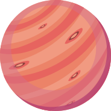
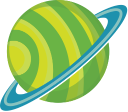

Come join us at the Community Science Museum where we’re committed to making science accessible to all.

Over the course of human history, science has developed from our early understanding of fire, wind, water, and earth to exploring everything from galaxies far away to the very building blocks of life itself.
The aim of our museum is to create a space where everyone can experience the wonders of our discoveries and perhaps even ignite a lifelong passion to continue the exploration of the world around us. We believe science should not be confined to the textbook, but brought to live through exhibits.
This is why we have over 1000 different exhibits on the many varied subjects of science to explore. Many of these exhibits are designed for you to interact with and play around to see science come to life (apart from the dinosaur exhibits – they only come to life at night when everyone’s gone home).
-
For kids
Are you a young person looking to learn more about science? Come on down to our museum, there’s plenty to see and do.
You can learn about Newtonian physics from our bumper swing, or why not travel back in time and meet our resident Woolly Mammoth? Our exhibits are designed to be accessible for interested minds, so make sure you come ready to learn and explore.
We also have the Young Stars club which meets once a week on a Saturday between 10:00 and 13:00 where you’ll get to explore and experiment with our team of experts.
During the school holidays we run special holiday clubs where you can join other children your age to go on a journey of discovery. Each holiday we pick a new theme to explore. To find out more about the holiday club and how you can join, send us a message.
 -
For teachers
As a community-driven museum, we want to work with schools to create places of learning and exploring. Our team are on hand to give your students guided tours of the museum, teach them in our learning laboratory, and provide great video presentations that will excite and inspire them.
Please get in touch with us here to find out more about our facilities and to arrange a time to bring your students through for a visit.
 -
Researchers
Are you looking to get involved with our team of researchers and academics? Our museum offers various ways for you to use our resources and contribute towards them. We have online records, laboratory space, and a working relationship with a number of universities around the country.